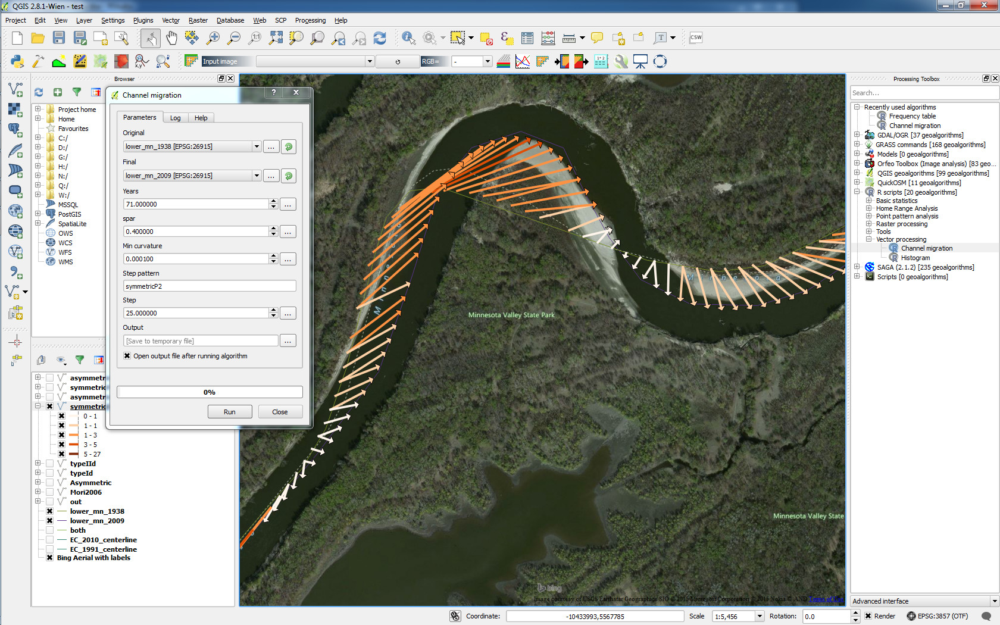
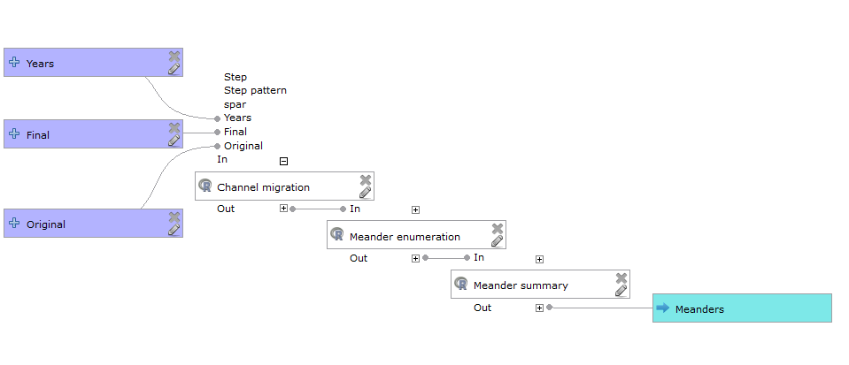
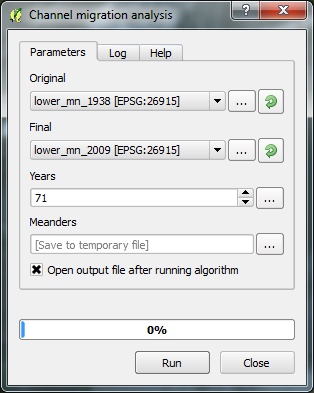

Channel migration tool assess annual erosion rate by application of Dynamic Time Warping method (as implemented in R dtw package) to align channel centerlines. DTW distance matrix is using 2D Euclidean space augmented with a signed curvature of a channel. Smooth splines x(t) & y(t) are used to derive curvature as a parametric function of position t along the channel.
This is essentially an alternative to
- Planform Statistics tool
- …
Prominent features are:
- fully automatic
- takes curvature into account allowing for more accurate migration estimation
- supports multiple channels processing at once (distinguished by feature ID, corresponding FID will go to refid field in the output)
- handles difficult geometries with splines and curvature accounting
- meanders enumeration
- assists in oxbow-lake related changes identification

Figure 1: Channel migration by matching curvature

Figure 2: Automatic meander enumeration
These tools can be chained up with QGIS Processing plugin.

Figure 3: QGIS Processing model

Figure 4: Dialog for a custom QGIS Processing model